6:00
Vágjunk bele!
Indulás Tordára
Vágjunk bele!
Indulás Tordára
Útbaejtjük Kolozsváron a mekit, majd megérkezünk a tordai sóbányába!
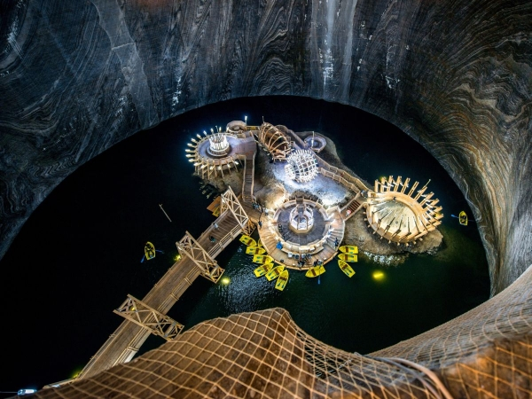Elfoglaljuk a szállásunkat Kolozsváron!
Ajánló:
Studio-K
Városnézés evés-ivás Kolozsváron
Ajánló:
Bringás hipster kávézó
Király egészséges közelkeleti kajálda
Reggeli a hotelban és indulás Korondra!
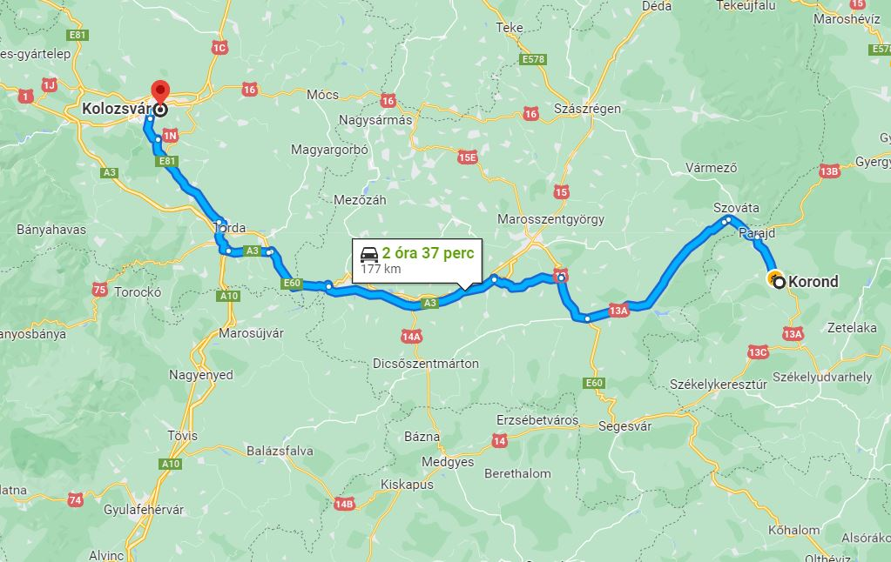Megérkezünk a korondi vásárra. Röviden körbenézünk, majd megyünk tovább.
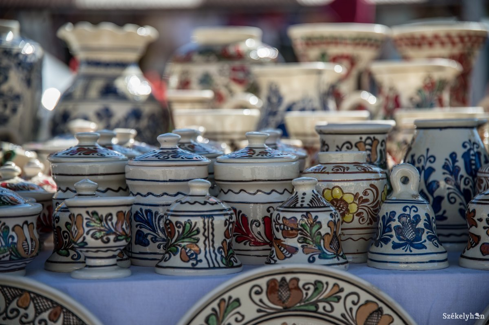Következő megállónk Székelyudvarhely, ahol először ebédelünk. Ezután meglátogatjuk a Mini Transylvania parkot!
Ajánló:
Csíki söröző
Ezután ellátogatunk a parajdi sóbányába!
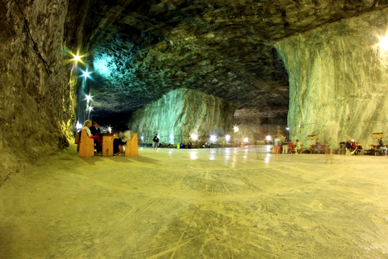Megérkezünk Gyergyószentmiklósra és elfoglaljuk a szállást, útközben eszünk egy pisztrángot! Az est további részében már pihenünk és iszunk!
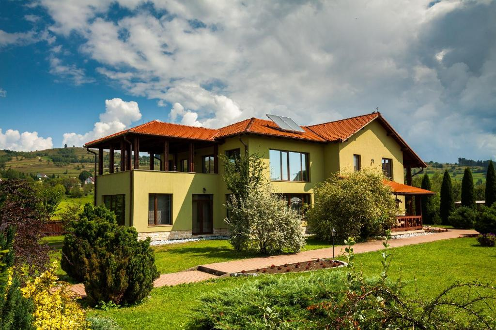Reggelivel indítjuk a napot, majd ezután elmegyünk a helyszínen medvelesre!
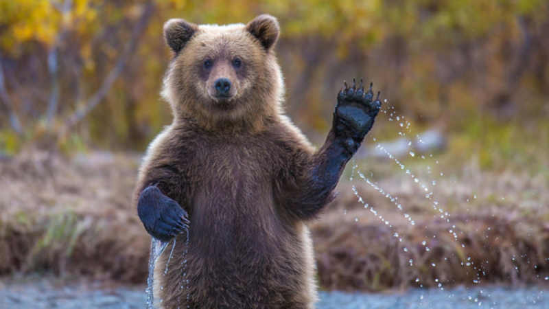Megérkezünk a gyilkos tóhoz! először ebédelünk, majd Bikklázunk a tó körül!
Ajánló:
Panoráma vendéglő
A gyilkos tó után indulunk Csíkszentsimonra, ahol meglátogatjuk a Csíki sörgyárat
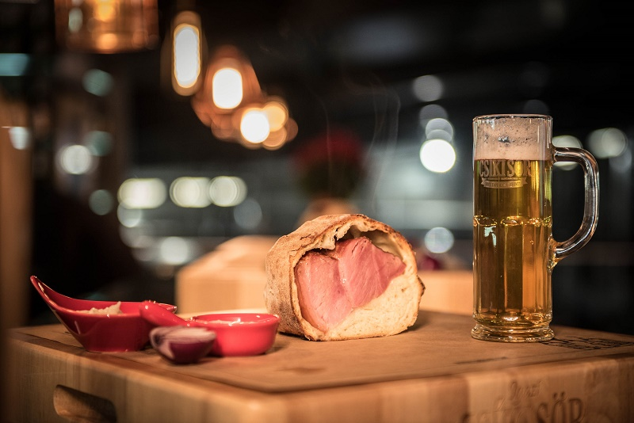Megérkezünk a szállásra Csíkbánfalvára!
Ajánló:
Somogyi Vendégház
Reggeli a szálláson, majd utána irány Tusnádfürdő!
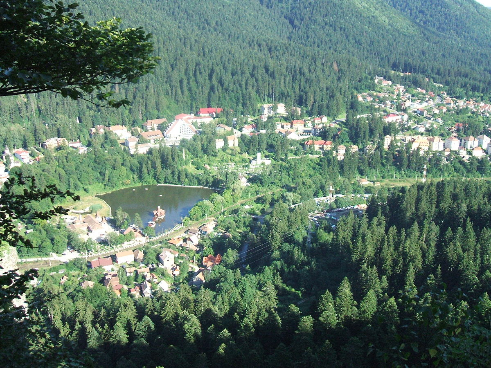Találkozó a Fortua hotelnál, indul a Ranger túra a Szent Anna tóhoz!
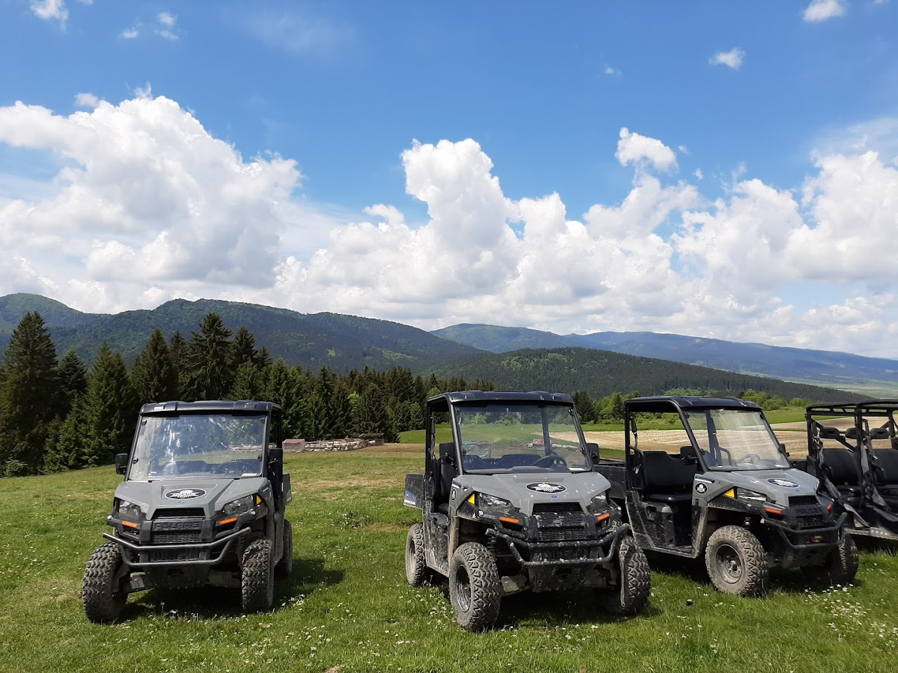Visszaérkezés a Fortuna Hotelhez, ebéd Tusnádfürdőn
Ajánló:
Székely Fogadó
Megérkezés Brassóba, elfoglaljuk a szállást.
Ajánló:
Barrique Chambers
Városnézés és vacsora!
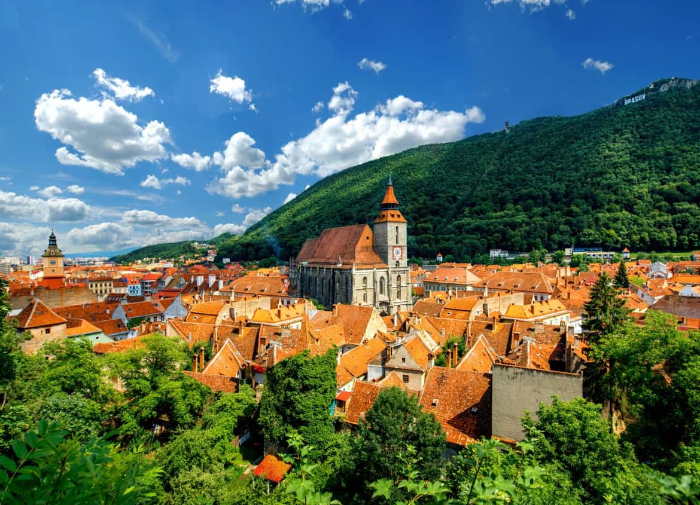Reggeli a szálláson, majd búcsúzunk Erdélytől...
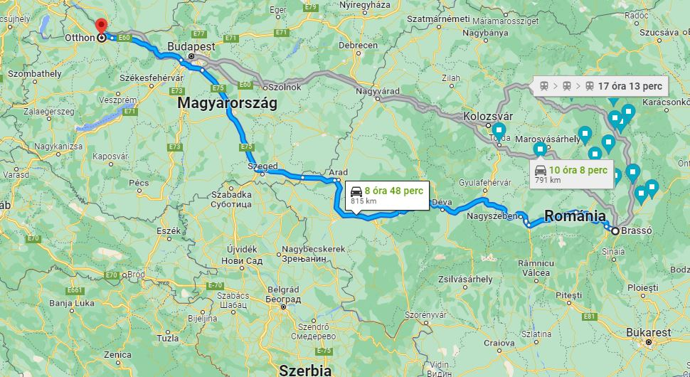Útközben számos látnivaló van még, hiszen Szeged vonalán megyünk vissza Magyarországra.
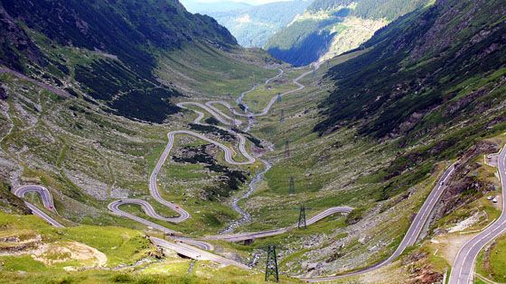Hazaérkezés.
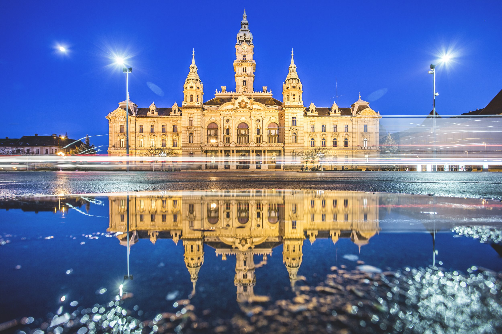